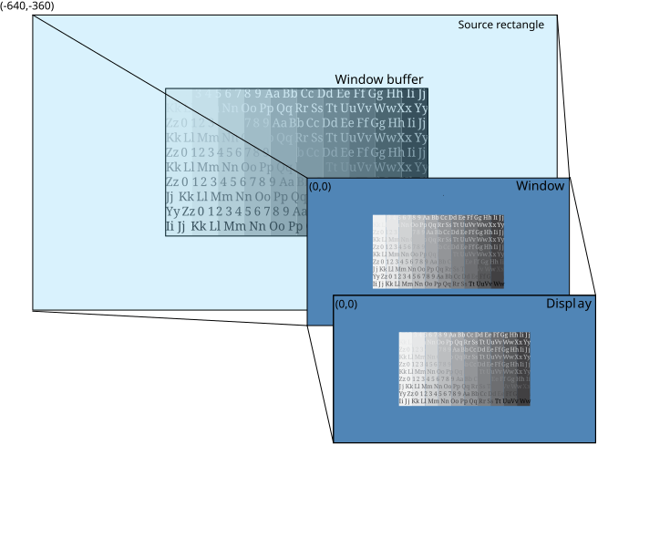

To zoom out as an owner window, set your source rectangle size to be larger than your window buffer; Screen uses background fill on the area of the source rectangle that's not occupied by your window buffer.
Screen uses the default position of (0,0) as the top left corner of your source rectangle, your window, and your display.
In this example, you're targeting a rectangular area centered over your window buffer for display. Your source rectangle is set to be larger than your window buffer to show how Screen uses background fill on the area of the source rectangle that's not occupied by your window buffer. Consider the following properties:
| Property | Window | Value |
|---|---|---|
| SCREEN_PROPERTY_SIZE | Parent | 1280x720 |
| SCREEN_PROPERTY_POSITION | Parent | (0,0) |
| SCREEN_PROPERTY_BUFFER_SIZE | Owner | 1280x720 |
| SCREEN_PROPERTY_SOURCE_SIZE | Owner | 2560x1440 |
| SCREEN_PROPERTY_SOURCE_POSITION | Owner | (-640,-360) |
To set these properties, use the corresponding window property with the Screen API function, screen_set_window_property_iv():
screen_window_t screen_win; /* your window */
int win_bufsize[2] = { 1280, 720 }; /* size of your window buffer */
int win_srcsize[2] = { 2560, 1440 }; /* size of your source rectangle */
int win_srcpos[2] = { -640, -360 }; /* position of your source rectangle */
int win_color = 255; /* your window background color */
...
screen_set_window_property_iv(screen_win, SCREEN_PROPERTY_BUFFER_SIZE, win_bufsize);
screen_set_window_property_iv(screen_win, SCREEN_PROPERTY_SOURCE_SIZE, win_srcsize);
screen_set_window_property_iv(screen_win, SCREEN_PROPERTY_SOURCE_POSITION, win_srcpos);
screen_set_window_property_iv(screen_win, SCREEN_PROPERTY_COLOR, win_color);
...
SCREEN_PROPERTY_SIZE and SCREEN_PROPERTY_POSITION are parent properties. Typically, your application sets the buffer and source rectangle sizes only.

By defining the source rectangle size to be the larger than your window buffer, you are targeting the entire source image in your window buffer as well as additional area for display. In this example, the window buffer is centered within the source rectangle. Therefore, you set the source rectangle's position to (-640, -360) so that the window buffer is positioned correctly with respect to the source rectangle.
The source rectangle is larger than your window, so the content of the source rectangle is scaled down to fit the window size. This scaling includes the area outside of the window buffer, but inside the source rectangle. Scaling provides the appearance of zooming out from your original source image.
The area outside the bounds of the window buffer is filled with the window background color (blue).